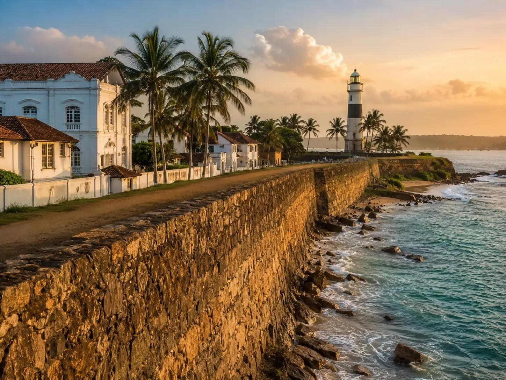
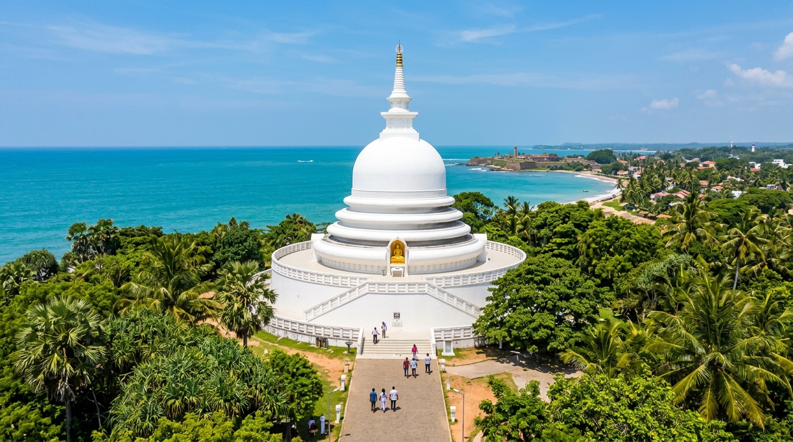
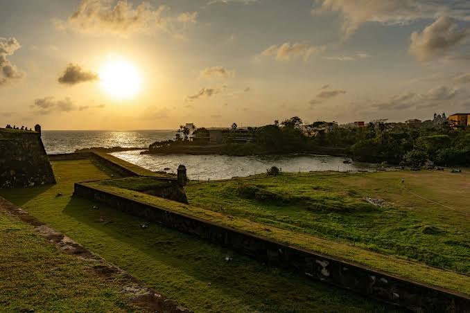
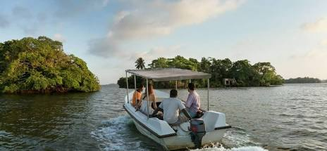
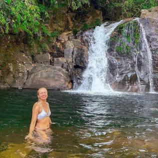
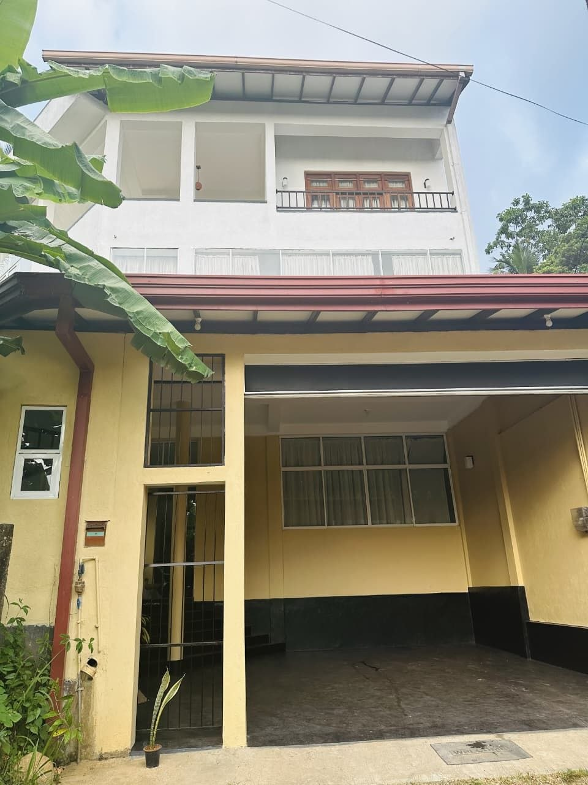

世界文化遗产
灵感与体验
不虚此行的宝藏之地
从世界文化遗产古堡漫步到隐秘冲浪海湾与生态热带雨林，随心定制您的南海岸假期。
历史建筑与文化遗产
漫步于经历数百年岁月洗礼的欧式堡垒、古老灯塔与充满异国情调的街巷。
阳光海岸与浪漫海湾
感受印度洋温润的海风，在细腻金沙滩与清澈泻湖中享受高端滨海度假生活。


自然生态与全景风光
探索宁静的山顶佛塔、红树林生态湖泊与世界自然遗产热带雨林秘境。

360°制高点
浪漫时刻
生态游船
世界自然遗产
精致栖居
精选高端奢华住宿
从古堡内充满传奇色彩的殖民地传世府邸，到悬崖海景生态度假村，尊享私密与高贵。
 历史古宅精品
历史古宅精品

口碑首选 设计感遗产酒店
设计感遗产酒店
 大师杰作海景房
大师杰作海景房
 顶级奢华传奇
顶级奢华传奇
 现代设计美学
现代设计美学
 湖畔生态秘境
湖畔生态秘境
酒店价格与房态随季节及房型有所浮动，建议点击链接前往官方渠道核实最新预订条款。
味蕾之旅
南海岸特色餐饮推荐
在加勒游玩期间，探索正宗斯里兰卡咖喱、精致海鲜餐厅与小资海景咖啡馆。
 地道锡兰菜
地道锡兰菜
 咖啡与餐酒馆
咖啡与餐酒馆
 奢华浪漫晚宴
奢华浪漫晚宴
餐厅营业时间与菜单可能随季节微调，建议出行前提前预约确认。
行程定制与预算估算
您的专属行程清单将在当前页面浏览器中实时保存。
您的行程清单目前为空，请在上方各版块点击“添加到行程”添加心仪项目。
住宿总计： $0
交通包车小计： $0
门票与餐饮预估： $0
预估参考总费用： $0